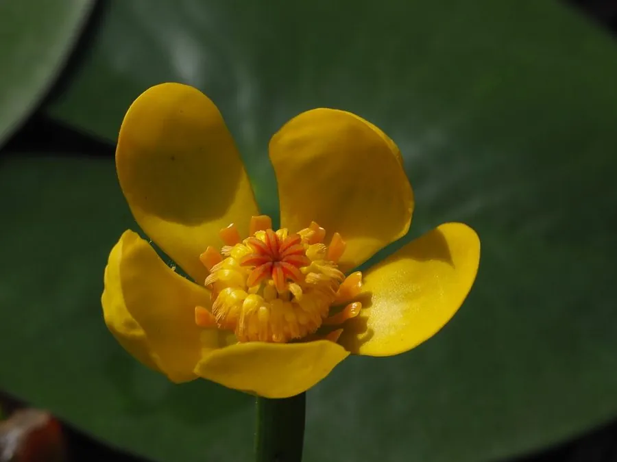

水生植物 · 植物界
萍蓬草 Nuphar pumila

睡莲科萍蓬草属多年生水生草本，叶片浮水、花黄色挺出水面，根状茎可食，分布于欧亚北部池塘沼泽，是常见的水景植物。
- 分类
- 门被子植物门纲木兰纲目睡莲目科睡莲科属萍蓬草属
- 栖息环境
- 池塘、湖泊和沼泽的浅水区，喜阳光充足、静水
- 地理分布
- 欧亚大陆北部，中国东北、华北及西南等地有分布
- 保护级别
- 暂无评估
物种志
萍蓬草为睡莲科萍蓬草属的多年生水生草本，根状茎粗壮、横生于水底泥中。叶片浮于水面，卵形或心形，长 8–15 厘米，基部有深弯缺，表面深绿色、有光泽，背面带紫色。花单生，挺出水面，萼片 5 枚、黄色，花瓣小而藏于萼片内，直径 2–3 厘米，花期 5–8 月；果实为浆果，球形。
萍蓬草分布于欧亚大陆北部的池塘、湖泊和沼泽，喜阳光充足、温暖静水，耐寒性较强，在水深 30–80 厘米的浅水中生长良好。它的根状茎富含淀粉，可煮食或酿酒，也可入药；叶片浮水、黄花挺立，是园林水景的常见植物。栽培以分株繁殖为主，春季将根状茎切段栽入塘泥即可；生长期间需保持充足光照，及时清除过多浮叶。
形态与习性
- 株高花葶挺出水面约 10–20 厘米
- 叶片浮水，卵形或心形，长 8–15 厘米
- 花期5–8 月，花黄色，直径 2–3 厘米
- 水深适宜水深 30–80 厘米
- 光照喜充足阳光
- 土壤富含腐殖质的塘泥
- 繁殖以根状茎分株为主
- 主要用途水景观赏，根状茎可食
趣味知识
- 萍蓬草的黄色“花瓣”其实是萼片，真正的花瓣很小，藏在萼片内侧。
- 它的根状茎富含淀粉，过去曾被煮食或用来酿酒。
- 萍蓬草的花挺出水面，与浮在水面的睡莲不同。